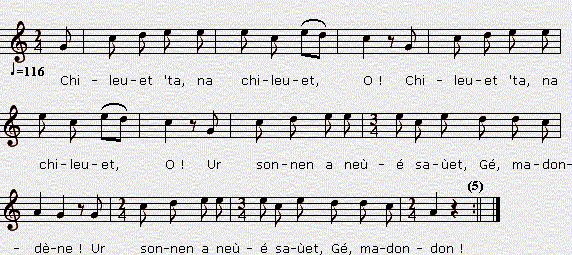
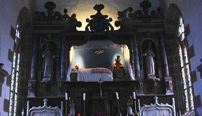
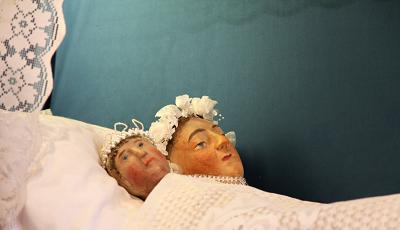
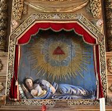
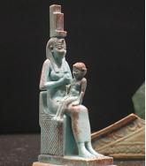
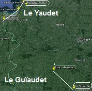
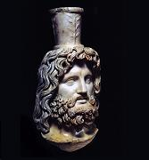
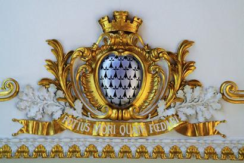
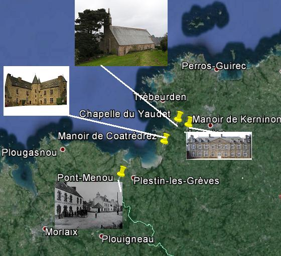

Pardon Ker Yaoded
La pardon du Yaudet
The Pardon of Le Yaudet
Trois versions collectées par Théodore Hersart de La Villemarqué, dont
2 tirées du 1er Carnet de Keransquer (pp. 89-94, 97-98)
et 1 du 2ème Carnet (pp. 136 bis - 137 bis).
Three versions collected by Théodore Hersart de La Villemarqué
2 recorded in the First Keransquer collecting book (pp. 89-94, 97-98)
and one in the 2nd book (pp. 136 bis - 137 bis).
2 tirées du 1er Carnet de Keransquer (pp. 89-94, 97-98) et 1 du 2ème Carnet (pp. 136 bis - 137 bis).
Three versions collected by Théodore Hersart de La Villemarqué
2 recorded in the First Keransquer collecting book (pp. 89-94, 97-98) and one in the 2nd book (pp. 136 bis - 137 bis).

Mélodie
Chantée par Loeiz Herrieu (Guerzenneu ha sonenneu Bro Guened),
tirée de "Musiques bretonnes" de Maurice Duhamel: Arrangement Christian Souchon (c) 2008
VERSION 1 - CARNET 1
|
BREZHONEK AR YEODET p. 89 I 1. - Va zat, va mamm, din lavarit Ha me ya d'ar pardon d'ar Yeodet? 2. - D'ar Yeodet c'hwi n'yefet ket 'Med kompagnunezh a ve kavet. 3. - Kompagnunezh awalc'h am-eus kavet Evit mond d'ar pardon d'ar Yeodet. - II 4. Barzh ar feunteun pa oa degouet Da evañ dour hi oa aet. 5. Deus ar feunteun pa a zeuas, Ur markiz hi a rañkontras. p. 90 6. - Plac'hik yaouank, din lavarit, Eus belec'h deuit pe pelec'h ez ait? 7. - Eus ar ger e zeuan Ha d'an Yaoded a ean. 8. - Plac'hig yaouank, d'in lavarit, Ho kompagnunezh war lerc'h 'ma chomet? 9. - Keit on-me bet 'evañ dour 'terriñ va sec'hed, Va kompagnunezh 'raok ema bet. 10. - Deus ganin da vaner an Tride, Ha ni yei warc'hoazh d'ar Yeodet pa vo deiz. 11. - Da vaner an Tride me ne yen ket, Kar d'ar Yeodet ret eo din voned. 12. Kompagnunezh vat, mar va c'harit Grit me yey ganeoc'h-c'hwi d'ar Yeodet! 13. - Ni ho sikourfe beteg ar marv Mez ar markiz zo war ho tro! - 14. Ar plac'hik paour a ouele. Ne gave den d'he konsoliñ. 'Med ar palafraigner eñ a re: p. 91 15. - Deus-ta d'ar ger ha lez-hi, Kar to 'po keuz goude-se! 16. Lez-hi gant he c'hompagnunezh, Kar hi a lako da gwad da redek! 17. - Taolit hi din-me war va marc'h Ha lez hi da ouelañ he walc'h! - [17bis. 'Maes ar vro a oa kaset. E maner Dregin oa rentet.] III 18. E maner an Tride pa oa degouet E toull an nor-zal oa diskennet. Ur vatez vihan hi he-deus goulet: 19. - Matezik vihan, mar va c'harit Grit me yey ganeoc'h-c'hwi da gousked. 20. - O, salokras, va mestrez, Me ne 'c'hallan ket ho sikour, Na sikour plac'h yaouank ebet. 21. Preparet eo ho kwele er c'habinet Da vont gant an aotroù da gousked. - 22. Ar plac'hik paour 'dal he glevas, Teir gwech d'an douar 'fatigas. 23. Ar plac'hik paour a ouele, Ne gave den d'he konsoliñ 'Med ar palafraigner eñ a re: p. 92 24. - Tavit, plac'hik, na ouelit ket! Digant Doue, c'hwi vo paet Hag ar markiz a vo daonet. - IV 25. - Deuit-c'hwi ganin-me d'ar jardin Da choazañ ur bouked olifant Hag a zere deus ar merc'hed yaouank! - 26. Barzh ar jardin pa antreas Sign ar Groaz teir gwech a reas: 27. - O Itron Varia Rozera, Va sikourit betek 'n eur diwezhañ! 28. Panevet Ho ofañsiñ, Me ne yefen ket d'en em laziñ. 29. - Markiz, mar va c'harit, Ho kanif arc'hant din-me a rofet. 30. - Ur c'hanif arc'hant deoc'h na roen ket Na d'all plac'h yaouank ebet. Va c'hanif aour ne laran ket... - 31. Ur c'hanif aour dezhi pa roas, En he c'halon hi hen e flantas. 32. Pa ' zistroa 'r markiz endro, E oa 'r plac'hik paour war he genoù, Ar gwad dindani a boulladoù. p. 93 33. - Holl dud va zi, lakit hen boud sekret, Ha me roy deoc'h bep a kant skoed, 34. Ha bep zaou mard 'eo ret. Warc'hoazh, pa vo deiz vo interet. - V 35. Pa gane 'r c'houg da gouloù deiz Ha krene Maner An Tride 36. Gant ar Keraninor 'tont enni Hag an heuzoù vat e zoudarded enni. [36bis. Me wel erru Markiz Dolan A zo gantañ e tok kornet. E habit ruz. Ne vez gantañ, Ne vez nemed pa vez fachet]. 37. - Eurvat, eurvat, tud an ti-mañ! Pelec'h eo ar markiz dre-mañ? 38. - Mard' eo 'r markiz c'hwi a glaskit, Tri, pevar deiz zo, 'm eus ket eñ gwel't. 39. - Gaou a larez bremañ ha gaou, Kar c'hwi vez gantañ war an henchoù Da laerez merc'hed a-wechigoù. - 40. Markiz 'dal ma glevas, D'an traoñ gant an diri e teuas. Da gavout Keraninor a zeuas. 41. - Lez ganin-menig va buhez Ha kas ganit-te va danvez! 42. - N'eo ket da danvez a c'houlenan: Va c'hoar-vagerez a glaskan. - p. 94 43. Teir eur oa badet ar c'hombat Hag ar markiz oa skuilhet e wad. 44. Kriz oa ar galon na ouelje Maner an Tride neb a vije, 45. Gweled a ruilhañ ar ruioù Gant gwad ar markiz o skuilhañ. |
TRADUCTION FRANCAISE LE YAUDET p. 89 I 1. Mon père, ma mère, dites-moi Pourrai-je aller au pardon du Yaudet? 2. - Vous n'irez pas au Yaudet A moins qu'on ne [vous] trouve de la compagnie . 3. - De la compagnie, j'en ai trouvé suffisamment Pour aller au pardon du Yaudet. - II 4. Dans [l'édicule de] la fontaine quand elle fut arrivée, Elle est allée boire. 5. Quand elle revenait de la fontaine, Elle a rencontré un marquis. p. 90 6. - Jeune fille, dites-moi, D'où venez-vous, sinon, où allez-vous? 7. - De chez moi je viens Et je vais au Yaudet. 8. - Jeune fille, dites-moi, Votre compagnie, elle est restée en arrière? 9. - Pendant que j'étais à boire de l'eau pour étancher ma soif, Ma compagnie est partie devant. 10. - Viens avec moi au manoir du Tridé, Et nous irons demain au Yaudet, quand il fera jour. 11. - Au manoir du Tridé je n'rai pas, Car c'est au Yaudet que je dois me rendre. 12. Mes bonnes compagnes, si vous m'aimez Faites que j'aille avec vous au Yaudet! 13. - Nous vous secourerions jusqu'à la mort Sans le marquis qui s'occupe de vous! - 14. La pauvre fille pleurait Et ne trouvait personne pour la consoler. Si ce n'est le palefrenier qui disait: p. 91 15. - Rentre donc à la maison et laisse-la, Sinon tu vas le regretter, après coup! 16. Laisse-la avec sa compagnie, Car elle fera couler ton sang! 17. - Jetez-la moi sur mon cheval Et laisse-la pleurer tant qu'elle voudra! - [17bis. Elle fut conduite hors du pays Et elle arriva au manoir de Dregin.] III 18. Au manoir du Tridé quand elle arriva Elle descendit sous le porche. Elle a demandé à une petite servante: 19. - Petite servante, si vous m'aimez Faites que j'aille dormir avec vous. 20. - O, pardonnez-moi, ma maîtresse, Je ne peux vous être d'aucun secours, Pas plus à vous, qu'aux autres jeunes filles. 21. Votre lit est préparé dans la petite chambre Pour aller coucher avec le seigneur. - 22. La pauvre fille, en entendant cela, Trois fois est tombée à terre, évanouie. 23. La pauvre fille pleurait, Et ne trouvait personne pour la consoler Si ce n'est le palefrenier: p. 92 24. - Silence, jeune fille, ne pleurez pas! Dieu vous le revaudra. Quant au marquis, il sera damné. - IV 25. - Venez avec moi au jardin Cueillir la fleur d'ivoire Celle qui va si bien aux jeunes filles! - 26. Quand elle est entrée au jardin Elle a fait trois fois le signe de croix: 27. - O Notre-Dame du Rosaire, Secourez-moi à mon heure dernière! 28. Si ce n'était pas vous offenser, Je n'irais pas me tuer... 29. - Marquis, si vous m'aimez, Vous me donnerez votre canif d'argent. 30. - Ce n'est pas un canif d'argent que je te donnerai Pas plus que je n'en ai donné aux autres filles. Mon canif d'or, pourquoi pas? ... - 31. Quand il lui donna un canif d'or, Elle se le planta dans le cur. 32. Quand le marquis revint, La pauvre fille gisait face contre terre Avec, sous elle, des flaques de sang. p. 93 33. - Vous tous, gens de ma maison, si vous gardez le secret, Je vous donnerai cent écus chacun, 34. Et même deux-cents écus chacun, s'il le faut. Demain à l'aube, nous l'enterrerons. - V 35. Lorsque le coq chanta, au point du jour, Le manoir du Tridé tremblait. 36. Keraninor arrivait Et c'était le bruit des bottes de ses soldats. [36bis. - Je vois arriver le marquis de Doélan Il porte son tricorne Et son habit rouge. Il ne le met jamais A moins d'être dans une colère noire]. 37. - Bonjour, bonjour, gens de cette maison! Où est le marquis par ici? 38. - Si c'est le marquis que vous cherchez, Cela fait deux ou trois jours que je ne l'ai plus vu. 39. - Tu dis un mensonge à présent, un mensonge, Car on vous voit souvent, tous les deux sur les chemins Et vous enlevez les filles assez souvent. - 40. Quand le marquis entendit ces éclats de voix, Il descendit les marches Et vint à la rencontre de Keraninor. 41. - Laisse-moi donc la vie Et emporte mes biens avec toi! 42. - Ce n'est pas tes biens que je réclame: C'est ma sur de lait qu'il me faut. - p. 94 43. Trois heures a duré le combat Et le sang du marquis fut versé. 44. Cruel le cur qui n'eût pleuré Au manoir du Tridé quel qu'il eût été, 45. En voyant les rues ruisseler Du sang du marquis qui coulait. |
ENGLISH TRANSLATION LE YAUDET p. 89 I 1. - Father, Mother, tell me May I go to Le Yaudet Pardon? 2. - To Le Yaudet you shall not go Unless you go in company. 3. - I shall have enough company To go to Le Yaudet Pardon. - II 4. When she passed by a fountain She stopped to drink some water. 5. When she returned from the fountain, She encountered a marquis. p. 90 6. - Young girl, tell me, Where do you come from and where are you going? 7. - I come from home I am going to Le Yaudet. 8. - Young girl, tell me, Do your companions linger behind? 9. - While I stayed to quench my thirst, My companions have gone ahead. 10. - Come with me to Tridé manor, And we shall go to Le Yaudet early tomorrow. 11. - To Tridé manor I shan't go, It is to Le Yaudet I am going. 12. - My companions, please come! Make that I go with you to Le Yaudet! 13. - We would give our lives to rescue you But the marquis takes care of you! - 14. The poor girl wept. She found no one to comfort her, Except the ostler. He did: p. 91 15. - Go home, Master, and let her go! This will get you into trouble! 16. Let her go with her companions! Could result in your blood being shed! 17. - Lift her up on my horse's back! Let her weep her fill! - [17bis. She was carried far away. In Dregin Manor she alighted.] III 18. When she arrived in Le Tridé Manor, She alighted under the porch. A little maid greeted her: 19. - Little maid, if you pity me, Make that I may go to sleep with you. 20. - O, with your leave, Madam, I can't help you in any way, As I could not help any girl before you. 21. Your bed is made in the little bedroom Where you are to sleep with the lord. - 22. The poor girl on hearing it, Three times swooned and fell on the floor. 23. And the poor young girl did weep, And found no one to comfort her But the ostler, a good man, who did: p. 92 24. - Be quiet, young girl, stop crying! You shall be rewarded by God And the marquis will be damned. - IV 25. - Come with me to the garden We'll pick ivory flowers As becomes an innocent girl! - 26. When she entered the garden Three times she made the sign of the Cross: 27. - O, Our Lady of the Rosary, Succour me at the hour of my death! 28. Rather than offending you, I must now kill myself. 29. - Marquis, if you please Lend me your silver dagger. 30. - It is not a silver dagger I'm lending you Nor would I any other girl: But my gold blade dagger, why not?... - 31. He handed her out his gold dagger, With which she stabbed herself in the heart. 32. When the marquis came back, The poor girl lay with her face to the ground, Amidst a pool of blood. p. 93 33. - You all, people of my house, keep it secret, And you shall have a hundred crowns each, 34. Or two hundred each, if need be! Tomorrow at dawn, we shall bury her. - V 35. When the cock crowed at sunrise All Tridé Manor began to shiver: 36. Keraninor was drawing near. T'was the thump of his soldiers' boots. [36bis. - I see Marquis Dolan coming, His three-cornered hat on his head; In his red coat, he never dons Unless in terrible fits of rage]. 37. - Hello, hello, the lot of you! Is the marquis around here? 38. - Is it the marquis you are looking for? For three or four days we have not seen him. 39. - That's a lie you are telling me! You often roam with him the roads and pathways And abduct girls now and then. - 40. The marquis, hearing these shouts, Went down the stairs And came to meet Keraninor. 41. - Spare me my life And take all my goods! 42. - It is not for your goods I'm longing But for my foster-sister! - p. 94 43. For three long hours they have fought And the marquis' blood was shed. 44. Cruel-hearted had been whoever At Tridé Manor had not cried 45. On seeing the street gutters reddened By the marquis' blood flowing in them. |
VERSION 2 - CARNET 1
|
BREZHONEK O VONT D'AR PARDON D'AR GER YEODET p. 97 I 1. O vont d'ar pardon d'ar ger Yeodet Me am eus kollet va c'hompagnoned. 2. D'evañ dour war-lerc'h me oa chomet. Va 'c'hompagnonez 'n oe pellaet. 3. - Va c'hompagnonez, chomit d'am c'hortoz. Ni yello d'ar pardon asamblez. 4. - Plac'hik, mar awalc'h anal e ve Marteze, ni ho c'hortefe. 5. Me wel un inkane hag un dibr: Plac'hik, plac'hik, ni a ya kuit! - 6. Ne oa ket he c'homz peurechuet, War lost e inkane pa oa taolet Hag er-maez ar vro e oa kaset. II 7. Er-maez ar vro e oa kaset Da Manet An Tride e oa rentet. 8. - Bonjour, bonjour, O keginourez. Ha ni goanio henozh asamblez? 9. Eus ar memez taol ni a goanio, Hag er memez gwele ni gousko? 10. - Eus ar memez daol, ni goanio ket, N'er memez gwele na gouskfem ket. p. 98 11. Deus taol an aotroù c'hwi goanio Hag er memez gwele c'hwi gousko. - 12. Sonet oa 'n eur goude hanternoz. Oa 'r markiz hag ar plac'hik en o repoz. 13. D'an diou pe deir eur ken an deiz, Ar plac'hik a c'houren forzh he buhez. 14. Hag a lavare paotr ar marchosi: - Kourajit, plac'hik. Me wel an deiz! - 15. Hag a lavare paotr ar gambr: - Kouraj, kouraj, plac'hik yaouank, Kar me wel an deiz, asuremant. 16. - Mar 'peus kemend-all a druez din, Ait-c'hwi da glask ur belek din. - 17. - Aotroù Valantin, klevoud a rit: Ar plac'hik yaouank a c'houlenn 'r beleg! 18. - Lezit hi da c'houlenn pezh a garo. Ha pa vo marv, ni he entero, Ha yello hon daou er-maez ar vro. - III 19. A-benn un eur hanter war an tachenn Degoue he breur-mager d'he goulenn. 20. - Pelec'h eo aet 'n aotroù Valantin, mestr ar maner, 'Neus degaset gantañ va c'hoar vager? 21. - 'N Aotroù Valantin zo partiet: Aet eo d'ober d'an Naonet an dekret. 22. - Me laka en e vaner an tan, Evit reiñ rekomp da e poan; 'N eus kaset gantañ va c'hoar yaouank! - 23. Kriz vije 'r galon ha na ouelje Maner an Truzin neb a vije, 24. Weled ar c'hambroù gwenn o ruilhañ Hag ar c'hambroù dre korn an ti: 'N Aotroù er c'hambr uhellañ o teviñ! |
FRANCAIS EN ALLANT AU PARDON DU YAUDET p. 97 I 1. En allant au pardon au village du Yaudet, J'ai perdu mes compagnons. 2. J'étais restée en arrière pour boire de l'eau. Ma compagne s'était éloignée. 3. - Ma compagne, restez pour m'attendre. Nous irons au pardon ensemble. 4. - Jeune fille, si nous avions assez de souffle Peut-être que nous vous attendrions. 5. Je vois un cheval sellé qui approche: Jeune fille, jeune fille, nous nous en allons! - 6. Cette parole n'était pas prononcée, Qu'on l'avait jetée sur la croupe d'un cheval Et qu'on l'emportait hors du pays. II 7. On l'emportait hors du pays Et elle arriva au manoir du Tridé. 8. - Bonjour, bonjour, cuisinière. Est-ce que nous dînerons ce soir ensemble? 9. Est-ce que nous dînerons à la même table, Et dormirons dans le même lit? 10. - Nous ne dînerons pas à la même table, Ni ne dormirons dans le même lit. p. 98 11. Vous dînerez à la table du seigneur Et dormirez dans le même lit que lui. - 12. Une heure du matin avait sonné. Et le marquis et la jeune fille reposaient. 13. Deux ou trois heures avant le jour, La jeune fille lutte de toutes ses forces. 14. Et le valet d'écurie a dit: - Courage, la fille, je vois le jour! - 15. Et le valet de chambre a dit: - Courage, courage, jeune fille, Je vois le jour, assurément. 16. - Si vous avez à ce point pitié de moi, Allez-donc me chercher un prêtre! - 17. - Seigneur Valentin, vous entendez? La jeune fille demande un prêtre! 18. - Laissez-la demander ce qu'elle voudra. Quand elle sera morte nous l'enterrerons, Et nous irons tous deux hors du pays. - III 19. Au bout d'une heure et demie, sur les lieux Arrive son frère de lait qui la demande. 20. - Où donc est allé le seigneur Valentin, le maître de ce manoir Qui a emmené avec lui ma sur de lait? 21. - Le seigneur Valentin n'est pas à la maison: Il est allé à Nantes en vertu d'un décrêt. 22. - Je vais mettre le feu à son manoir, Pour le récompenser de sa peine; Il a enlevé ma jeune sur! - 23. Cruel est le cur qui n'eût point Pleuré au manoir de Truzin, 24. Voyant les murs blancs de ses chambres Rougis de sang aux quatre coins: Et le seigneur brûler dans la plus haute! |
ENGLISH ON MY WAY TO LE YAUDET PARDON p. 97 I 1. On my way to Le Yaudet Pardon I went astray from my companions. 2. To drink water I had lingered behind. My companions had walked further on. 3. - My companions, stay and wait for me! We shall go to the pardon together. 4. - My girl, if we had breath enough left, Maybe we would wait for you. 5. But I see a harnessed palfrey: Girl, girl, we must be off! - 6. Hardly were these words uttered, When she was lifted on the back of a horse And carried to another land. II 7. And carried to another land. Soon she was in Tridé Manor. 8. - Good day to you. cooking maid Shall we dine together tonight? 9. Shall we dine at the same table, Shall we sleep in the same bed? 10. - We shall not dine at the same table, In the same bed we shall not sleep. p. 98 11. You shall dine at the lord's table And you shall sleep in the lord's bed. - 12. One o'clock, after midnight, rang. The marquis and the girl were still at rest. 13. At two or three o'clock before day, The girl wrestled with all her might. 14. And the stable lad said: - Cheer up, girl, I see the breaking of day! - 15. And the manservant also said: - Cheer up, cheer up, young girl, I can see the breaking of day, to be sure. 16. - If you are truly compassionate Please send for a priest for me. - 17. - Lord Valentin, don't you hear? The young girl asks for a priest! 18. - Let her ask for whoever she wants. If she dies we shall bury her, Then both of us we'll leave from here. - III 19. An hour and a half later, at the house Her foster-brother turned up and asked for her. 20. - Where has gone Lord Valentin, the lord of this manor, Did he take with him my foster-sister? 21. - The lord Valentin has left indeed: He had to go to Nantes pursuant to a decree. 22. - I will set his house on fire, To reward his exertions; He has abducted my foster-sister! - 23. Cruel the heart that had not cried At Truzin manor, whosoever, 24. Seeing the whitewashed walls stained with blood In all rooms and halls of the house: And the lord was burnt in the uppermost room! |
VERSION 3 - CARNET 2
|
BREZHONEK MARKIZ AN TRIDE p. 136 bis I 1. Selaouet holl hag e klefet, Ur zon a-nevez zo savet D'ur plac'h yaouank ez eo graet O vont dar [pardon] Ker-Yodet, 2. Ar plac'hikg-mañ a lavare Dhe c'hompagnunezh an deiz a oe: - Ma gompagnunezh em gorto(z)et: Me ya d'evañ dour d'am sec'hed, 3. A-boan m'ar plac'h pa oa degouet Ar markiz Tride 'deus gwelet. - Ha deomp da [gaoz ganti] [Da b'lec'h ez it] ha p'lec'h oc'h bet? 4. - Me ya dar pardon d'ar Geodet - [D'ar Geodet?] Pell zo 'ma monet! p. 137 [Pell ema] Plac'h din e laret: Ho kompagnunezh p'lec'h eo aet? 5. - Ma kompagnunezh zo aet araok. Ma re tennet... - Plac'h me ho diskou(ez)et Da vont d'evañ dour deus ho sec'hed 6.- Laka hi amañ war lost ma marc'h Ha lez he da grial forzh he gwalc'h! Ar mouchouer he gou(zou)g war he fenn da lakait Gant aon na vije bet anave(ze)t! 7. - Ma c'hompagnunezh mar me c'harit En añv da Zoue ma sikourit, 8. - Mar vije gant un all 'vijech aet Ni hor-be sur ho sikouret, Pa na gant ar markiz oc'h hansavet, N'edomp ket evit ho sikouret. - 9. Ar (pajik) bihan a lavare . . .- lakait hi Tennit he mouchouer war he genoù, Dont a ra ar gwad a voulladoù! - II 10. Ar plachig-mañ a lavare E bourc'h an Tride pa errue: : p. 137 bis 11. - Roit-c'hwi din 'r gador [skabell) da aze(z)añ Mar m'on markizez en ti-mañ. - - Markizez en ti ne vioc'h ket. Mestrez dan aotrou ne laran ket. - 12. Ar markiz yaouank a lavare: - Na prim deuit chwi ganen! - Gwell e ve ganin bout barzh ma bro A gonto uioù a dousennoù - 13. Oa ket ar ger peurechuet Ar vatezh he-deus respontet: - Vit ho plev melen ned'eo ket, Viot kemeret gantañ da bried. - 14. Ar plachig paour dal! ma kelaouet, Ur c'hontell he-deus goulennet, En he galon, deus hen plantet. 15. - Ha bennoz Doue war he ene Setu marv nep a garen! - (Il la fait enterrer dans son jardin) III 16. Pa gane r c'hog d'ar goulou-deiz E krene ar ruioù an Tride; (le frere de lait arrivé) Ur markiz yaouank a lavare E-barzh an Trid pa n'errué: 17.- Markis an Tride me zeskis deoc'h Mont da laeret merc'hed diganeoc'h (il mit le feu au chateau). |
FRANCAIS LE MARQUIS DE TRIDE p. 136 bis I 1. Ecoutez tous! Vous entendrez Un chant récemment composé Au sujet d'une jeune fille Qui allait au pardon du Yaudet, 2. Cette jeunes filles disait A ses compagnons de pèlerinage: - Mes amis, attendez-moi: J'ai soif. Je vais boire un peu d'eau, 3. A-peine était-elle à la source Que le marquis Tridé l'aperçut. - Allons donc [lui faire la causette!] [Où alles-vous?] D'où venez-vous? 4. - Je vais au pardon du Yaudet. - [Au Yaudet?] La route est bien longue! p. 137 [Fort longue.] La fille dites-moi: Tous vos compagnons où sont-ils? 5. - Les autres sont partis devant. Je me suis trop attardée... - Ma fille, je m'en vais vous apprendre A boire dès la moindre soif 6.- Juche-la sur mon cheval Qu'elle pleure autant qu'elle voudra! Cache-lui le visage avec son fichu De peur qu'on ne la reconnaisse! 7. - Mes amis, pour l'amour du ciel Et de Dieu, venez à mon aide! 8. - Qu'un autre vous eût enlevée Nous vous eussions porté secours, Dès lors qu'il sagit du marquis, Nous ne vous sommes d'aucune aide. - 9. Le page du marquis disait . . .- laissez-la donc Ôtez ce mouchoir de sa bouche, Voyez son sang qui coule à flots! - II 10. - La jeune fille disait en Entrant dans la gentilhommière : : p. 137 bis 11. Donnez-moi une chaise (siège) pour m'asseoir! Si céans je suis la marquise. - - Vous? Marquise ici, non ma foi! Maîtresse du marquis, peut-être. - 12. Et le jeune marquis disait: - Allez, venez vite avec moi! - Je préfère rentrer chez moi Compter les oeufs à la douzaine.- 13. On ne l'a pas laissée parler: La servante a pris la parole: - En dépit de vos cheveux blonds, Il ne veut de vous pour épouse. - 14. La pauvrette a compris, ma foi. Un couteau elle sollicite, Et se l'est planté dans le coeur. 15. - Ha, que Dieu bénisse son âme! Elle est morte et moi je l'aimais! - (Il la fait enterrer dans son jardin) III 16. Lorsque le coq chantait à l'aube, Les rues du Tridé tremblaient (Le frere de lait arrivait) Un jeune marquis se présente Au Tridé. Il a déclaré:: 17.- Marquis Tridé je vais t'apprendre A voler les filles, crois-moi! (Il mit le feu au chateau). |
ENGLISH MARQUIS TRIDE p. 136 bis I 1. Listen everyone! You will hear A recently composed song About a young girl Who was going to Yaudet pilgimage, 2. This young girl said To her fellow pilgrims: - My friends, wait for me: I am thirsty. I'm going to drink some water, 3. She was hardly at the source When Marquis Tride spied her. - So let's go and talk to her! [Where are you going?] Where are you from? 4. - I'm going to Yaudet pilgrimage. - [To Yaudet?] It is a long way! p. 137 [A long way indeed!] Girl, tell me : All your companions where are they? 5. - The others walk ahead of me. I fear I am a bit late ... - Girl, I'm going to teach you To drink as soon as you're thirsty 6.- Lift her on my horse She may cry. Let her cry her fill! Hide her face with her head scarf Lest they would recognize her! 7. - My friends, for heaven's sake In the name of God, come to my aid! 8. - If another had kidnapped you We would have helped you, But since it's the Marquis, We must restrain. - 9. The page of the marquis said . . .- leave her alone! Take that handkerchief off her mouth, See her blood flowing! - II 10. - The girl said on Entering the mansion: : p. 137 bis 11. Give me a chair to sit on! If I am the Marquise. - - You? Marquise here, you are not, upon my faith! Mistress of the Marquis, perhaps. - 12. And the young marquis said: - Come on, come quickly with me! - I prefer to go home Count the eggs by the dozen.- 13. They didn't let her speak out: The maidservant said: - Despite your blond hair, The Lord doesn't want you for a wife. - 14. The poor girl had understood clearly. For a knife she asked And stuck it in her heart. 15. - Ha, God bless her soul! She died and I loved her! - (He buried her in his garden) III 16. When the rooster crowed at dawn, The streets of Tridé trembled (Her foster brother was coming) A young marquis was turning up At Tride mansion. He said :: 17.- Marquis Tridé I will teach you To steal innocent girls, believe me! (He set the castle on fire) . |
NOTES:
|
Bibliographie: - Cahiers de Keransquer: . Les trois versions notées ci-après. Deux dans le carnet 1 (p. 89-94 et 97-98 du carnet 1) et une dans le carnet 2 ("Markiz an Tridé", p. 136 bis-137 bis). - Coll. Saint-Prix, "Marquis Tredéz" (Ms. 2, f. 20r-44v) = J. Ollivier, "Marquis Tredéz" (Ms. 987, p. 39-48) = Y. Le Diberder, "Markiz Tredre" (Cahier 1, p. 59-64; recopié d'après Ms. 987 de Joseph Ollivier); - Coll. Penguern, . t. 90: "Trédrez" (f. 109-113,Taulé, 1851) (=Gwerin 6, p. 113-115); chanté par Catherine, de Coatudel, en Mespaul, femme de Pierre Le Borgne, de Taulé 03.03.1851). . t. 91: "Tredrez" (= Dastum, p. 348 - 351). . "Na ma plich ganech e sileofet" (sans titre = Dastum, p. 352-357). . "Ne voa ket e ker peurlaret" (sans titre = Dastum, p. 358-359). . Texte 536 (sans titre = Dastum, p. 360); . "Tredrez" (= Dastum, p. 361-366) . "Tredre" (= Dastum, p. 367- 369) . "Tredre" (= Dastum, p. 370 - 371) . t. 93: "Guers ar Yeodet" (f. 116v - 115r v - 116r = Gwerin 9, p. 178-179) . t. 95: "Tredrez" (f. 185v - f. 197v) - Luzel, . Ms; 17 (Q): "Markiz Trede" (Plouaret, 1848 = Gwerin 1, fragment). - Guillaume Le Jean: . Markiz Tredrez / Le marquis de Trédrez: (Enquête Fortoul, t. 2, n°. 52, p. 762-767). - Luzel: . Gwerzioù Breizh Izel I: "Markiz Trede / Le marquis de Coatrédrez", pp. 336-345, chanté par le sabotier Renan, commune de Trégrom, près de Lannion - 1854; . variante (ibidem, p. 344-349; fragment chanté par Marie-Joseph Kerival a Keramborgne 1848). . Luzel indique qu'il a recueilli en tout six versions de cette gwerz dans diverses localités. . . «En Basse-Bretagne»: (Revue de Bretagne et de Vendée, t.9, 1866, pp. 67-70; étude). . "Publicateur du Finistère": "Markiz Tredrez" (22.2.1862), |
 La vierge couchée du Yaudet (17ème siècle) (Peut-être héritière d'une déesse païenne également représentée couchée et allaitant un enfant).  |
Bibliography: - Keransquer copybooks: Three songs presented here below: copybook 1 (2 versions, pp. 89-94 and 97-98) and copybook 2: 1 version, "Markiz an Tridé" (pp. 136 bis-137 bis). - Coll. Saint-Prix, "Marquis Tredéz" (Ms. 2, f. 20r-44v) = J. Ollivier, "Marquis Tredéz" (Ms. 987, p. 39-48) = Y. Le Diberder, "Markiz Tredre" (Book 1, pp. 59-64; presented below, after Joseph Ollivier's Ms. 987); - Coll. Penguern, . t. 90: "Trédrez" (f. 109-113,Taulé, 1851) (=Gwerin 6, p. 113-115); sung by Catherine, from Coatudel, near Mespaul, wife of Pierre Le Borgne, from Taulé 03.03.1851). . t. 91: "Tredrez" (= Dastum, p. 348 - 351). . "Na ma plich ganech e sileofet" (without title = Dastum, pp. 352-357). . "Ne voa ket e ker peurlaret" (without title = Dastum, pp. 358-359). . Text 536 (without title = Dastum, p. 360); . "Tredrez" (= Dastum, p. 361-366) . "Tredre" (= Dastum, p. 367- 369) . "Tredre" (= Dastum, p. 370 - 371) . t. 93: "Guers ar Yeodet" (f. 116v - 115r v - 116r = Gwerin 9, p. 178-179) . t. 95: "Tredrez" (f. 185v - f. 197v) - Luzel, . Ms; 17 (Q): "Markiz Trede" (Plouaret, 1848 = Gwerin 1, fragment). - Guillaume Le Jean: . Markiz Tredrez / Marquis de Trédrez: (Fortoul Enquiry, t. 2, n°. 52, p. 762-767). - Luzel: . Gwerzioù Breizh Izel I: "Markiz Trede / Marquis de Coatrédrez", pp. 336-345, Sung by clogmaker Renan, parish Trégrom, near Lannion - 1854; . variant (ibidem, p. 344-349; fragment sung by Marie-Joseph Kerival at Keramborgne 1848). . Luzel states that he collected up to six versions of this gwerz in diverse places. . . «En Basse-Bretagne»: ("Revue de Bretagne et de Vendée", t.9, 1866, pp. 67-70; a study). . "Publicateur du Finistère": "Markiz Tredrez" (22.2.1862), |
|
Une intrigue classique Il est assez difficile de bien distinguer cette gwerz d'autres ballades dont l'intrigue est similaire: Une jeune fille échappe au déshonneur en empruntant à son ravisseur un couteau avec lequel elle se suicide. Elle est vengée par son fiancé, son parrain ou son frère de lait qui met le feu au château du coupable, après l'avoir tué en duel: - "La Filleule de Du Guesclin" du "Barzhaz Breizh". - "Rosmelchon", la version commune du précédent. - "Jeanne Le Roux". - "François Morvan". Outre l'évocation du Pardon (fête donnant droit à des indulgences) du Yaudet, c'est le nom du traître et celui de son adversaire qui identifient cette ballade: il s'agit invariablement de "Tred(r)e(z)" ou "Koattred(r)e(z)" pour le premier et de "Kerninon" ou une variante de ce nom, telle que le "Keraninon" de la 1ère version ci-dessus, pour le second. Le manoir est toujours celui de Coatrédrez, le château en L fortifié de Trédrez-Loquemeau. Le Yaudet, Coatrédrez et Kerninon sont des localités proches les unes des autres, sur la côte trégoroise, à l'ouest de Morlaix (cf. carte ci-dessous). Seules exceptions à cette belle unité, deux des versions des manuscrits de Penguern appellent le frère de lait de la jeune fille, non pas Kerninon, mais Lezobré ou Mesambré, ce héros de Lannion que La Villemarqué a rebaptisé Lez-Breiz. Lezobré appelle son adversaire "Trezelan". Le plus souvent, la jeune fille n'est pas nommée, mais la version de Mme de Saint-Prix, l'appelle "Suzanne", et c'est invariablement sur le chemin du pèlerinage du Yaudet qu'elle se fait enlever par le marquis et son palefrenier, son complice malgré lui. La version 1 ci-dessus, notée par La Villemarqué, correspond bien à cette description, si ce n'est que l'agresseur est désigné uniquement par son titre "le Marquis", mais son château demeure le "Maner an Tride", le manoir du Tridé. Son adversaire est appelé deux fois "Keraninor" et une fois (strophe 36 bis) "Marquis Dolan". La version 2 est encore plus atypique: le traître s'appelle "Monsieur Valentin" même si son château est le manoir de "Truzin" (sans doute une variante de "Trédrez"). Ce nom provient sans doute d'un roman de chevalerie "Orson et Valentin" dont Luzel nous apprend, dans ses "Notes de voyage", qu'il "dut être très populaire en Bretagne aux XVIème et XVIIème siècles. J'en vois souvent les deux héros sculptés, soit dans la pierre, soit dans le bois, sur les manoirs et les vieux meubles qui datent de ces époques". Que cette version 2 s'écarte autant de la norme s'explique sans doute par le fait qu'elle doit être cornouaillaise et non trégoroise comme celles de Luzel, Mme de Saint-Prix et de Penguern. Pierre de Coatrédrez Identifier le héros négatif de cette ballade relève de la gageure. La famille des Coatrédrez est mentionnée dès 1283 et elle a donné plusieurs chefs de bandes durant les guerres de la Ligue (1576 - 1595). Luzel pense avoir identifié ce fameux "Markiz Trede , Marquis de Coatrédrez": "Le peuple, à Saint-Michel-en-Grève, à Trédrez, à Ploulec'h et dans les environs, a conservé le souvenir d'un seigneur de Coatrédrez, du nom de Pierre, qu'il a flétri de l'épithète de cruel, Pierre le Cruel. Serait-ce le ravisseur de notre ballade ? Le manoir de Kerninon, encore habité par la famille de ce nom, Le Roux de Kerninon, est en la commune de Ploulec'h, limitrophe de celle de Trédrez." Le site Info -Bretagne est plus catégorique: "Curiosités de Saint-Michel en Grève: Femme au poignard (XVIIème siècle): En se promenant près de léglise de Saint-Michel-en-Grève, on peut voir un bas-relief, sculpté sur la porte extérieure de léglise, qui est inspiré par une chanson populaire, le gwerz «le marquis de Coatrédrez », telle que la rapporte François Luzel, dans un de ses recueils du XIXème siècle. Elle raconte lhistoire du marquis Pierre de Coatrédrez, violent seigneur local et surnommé «Pierre le Cruel», qui enleva une jeune femme de Ploulec'h alors quelle se rendait au pèlerinage du Yaudet. La jeune fille préféra se donner la mort en plongeant un poignard dans son sein. Ces informations proviennent des recherches de Roger Frey telles qu'elles sont décrites dans les bulletins municipaux de la commune de Saint-Michel (selon le site "http://patrimoine.region-bretagne.fr/main.xsp?execute=show_document&id=MERIMEEIA22003028") . Le même site précise que Pierre de Coatrédrez s'illustra, pendant les guerres de la Ligue, au cours des combats de Kérouzéré, de Morlaix, et de lîle Tristan, contre La Fontenelle. Une autre gwerz, "Pipi Coatrédrez, fondatour ar Gapucinet" "raconte les démêlés du seigneur avec des artisans de Lannion quil avait lésés en détournant à son profit les eaux du Léguer. A la fin de sa vie, peut-être pour tenter de se racheter, Pierre de Coatrédrez fonda à Lannion un couvent de Capucins." Yves de Coatrédrez Le fils de Pierre III pourrait bien, lui aussi, briguer le douteux honneur d'être le héros de la gwerz collectée par La Villemarqué. Alors que rien n'indique que Pierre soit décédé de mort violente, on sait que son fils périt assassiné 7 mois plus tard. Le site "Infobretagne" nous apprend en effet que: "A [la] mort [de Pierre], le 16 mars 1623, son fils Yves lui succéda, mais pour peu de temps, puisquil fut assassiné dun coup de carabine, le 13 septembre 1623, près de son château. Selon la tradition, son assassin ne fut autre que son beau-frère, Louis du Parc, seigneur de Locmaria et du Guérand, qui avait épousé en 1606 sa sur Françoise de Coatrédrez. Yves de Coatrédrez navait pas de postérité et avec lui séteignit donc, au faîte de leur puissance, la lignée des seigneurs du nom de Coatrédrez." Ces diverses informations semblent empruntées à l'article que Charles Le Goffic (1863 - 1932) consacra en 1902, dans la série "LÂme bretonne", au peintre de la renaissance néo-grecque : Jean-Louis Hamon (1777 - 1874). Le Goffic nous apprend que le peintre en question fréquenta un couvent à usage de pensionnat et d'école, fondé à Lannion, rue des Jongleurs, l'actuelle rue des Capucins, en 1622, par Pierre, marquis de Coatrédrez, "pour faire oublier au peuple les 'forseneries, malices et grièvetés' qui chargeaient la conscience du puissant seigneur." C'est le même seigneur "qui, dans une bagarre provoquée par un différend avec le meunier du Pont-de-Papier, noya, décolla ou méhaigna une vingtaine dartisans lannionais coupables davoir pris fait et cause pour le meunier". Charles Le Goffic tire sa science de l"Histoire de Lannion" d'Adolphe Lenepvou de Carfort (1861) qui contient une analyse de la gwerz "Pipi Coatrédrez, fondatour ar Kapusined". Mais il est en contradiction avec le site "Infobretagne"(rarement convaincu d'inexactitude), quand il affirme dans une note que "Pierre de Coatrédrez... fut tué en duel...par son propre beau-frère Vincent du Parc... en 1624." Le "livre de raison" (livre de comptes servant en même temps de chronique familiale) d'Yves Le Trividic, bourgeois de Guingamp, cité dans le mémoire de maîtrise de Laurence Fortin-Lejeune, publié sous le titre "Savoir mourir, savoir vivre" en 1995, semble donner une réponse définitive à ces interrogations. Il nous apprend que " Yves de Coatedrez seigneur dudit lieu fut tué de deux coups de carabine à travers du corps le samedi vingt et troizième jour de septembre 1623, à quatre heures après midi, à un demi quart de lieue de Coatedrez du côté de Lannion » Par ailleurs, le meurtrier Il est possible que, comme il arrive souvent, la gwerz ait créé un personnage à partir de plusieurs et ait puni, en l'occurrence, les méfaits du père en lui attribuant la mort violente du fils. La jeune fille On peut douter que la jeune fille de la ballade ait été originaire de Ploulec'h, en Trégor, même si elle est la sur de lait du seigneur de Kerninon, ce qui est connu des domestiques de Coatrédrez. On est d'ailleurs frappé par l'importance attribuée à ce type de lien par la gwerz qui reflète certainement un trait majeur de la mentalité collective. Ce lien transcendait les clivages sociaux: une mère noble confiait son enfant à une roturière qui lui donnait le sein en même temps qu'à sa propre progéniture (Guigoz n'était pas encore passé par là!). Il en allait de même du lien parrain ( ou marraine)-filleul(e), évoqué dans plusieurs gwerzioù: obtenir un noble parrainage était pour les parents de l'enfant, généralement des paysans aisés, un signe convoité de reconnaissance sociale. Ceci dit, plusieurs détails tendent à montrer que Suzanne, pour donner à la malheureuse victime le nom qu'elle porte dans la version la plus aboutie, celle de Mme de Saint-Prix, n'habite certainement pas Ploulec'h: "Ur plac'hik yaouank deus a Leon/ Zo aet d'ar Yaodet d'ar pardon" "Une jeune fille du Léon/ est allée au Yaudet au pardon".  Dans une autre, on voit cette jeune fille invoquer Notre-Dame de Bulat - Pestivien, plus proche du Guïaudet que du Yaudet, pour citer deux lieux de culte marial aux noms apparentés et distants de 30 km seulement:"An Itron Varia a Vulat/ Da gonzolo va mamm ha va zad..." Que Notre-Dame de Bulat/ Veuille consoler ma mère et mon père..." Cette localisation est peut-être dûe à une contamination par un autre chant: Fañchik Morvan. Le seigneur de Kerninon Quant à Louis du Parc de Locmaria, seigneur de Kerninon, mort en 1626, il est effectivement connu pour avoir tué son propre beau-frère. C'est sans doute le père de Vincent, premier Marquis de Guérand, héros d'une autre gwerz fameuse, selon Louis Le Guennec (article de 1921 dans le "Bulletin de la Société archéologique du Finistère"). Le fis de ce Vincent, Louis, est le M. de Locmaria dont Mme de Sévigné vante les talents de danseurs dans une lettre du 5 août 1671. Le site Info-Bretagne indique en outre les liens de vassalité qui existaient entre ces deux familles: "Le fief de Kerninon comprenait dans ses délimitations presque toute la paroisse de Ploulec'h et nombre de terres en Loguivy, Ploumilliau, Trédrez et Saint-Michel-en-Grève (Keropars)." La plupart des versions de la gwerz présentent effectivement Trédrez comme un obligé de Kerninon. Le même site nous apprend que les relations entre les seigneurs de Kerninon et de Coatrédrez n'ont pas toujours été aussi mauvaises: "En 1547, Prigent Le Roux, seigneur de Kerninon, etc., rompit les portes de la prison de Morlaix et en délivra son ami, le seigneur de Quoetrédrez (Coatrédrez), qui y était détenu, pour cause d'homicide, commis sur la personne de Louis du Quélennec, seigneur de Kerhervé (Ploubezre)." Les Archives départementales de Loire-Atlantique B 1649 mentionnent un P. Le Roux, seigneur de Kerninon, acquéreur d'une terre en Ploulec'h en 1624, qui pourrait aussi être le meurtrier de Coatedrez. Roland de Coatrédrez Le texte 536 des manuscrits de Penguern donne une tout autre interprétation de la ballade de Trédrez. Elle renvoie à la gwerz Le siège de Guingamp et aux événements de 1488: "1488: le traître Rohan envoie pour séduire ceux de Guingamp, ses créatures Tristan de Kerguezengar et Roland de Coatrédez. Rohan fait brûler les maisons des gentilshommes de la Duchesse [à titre de] représailles...Les troupes pillaient et ravageaient en ces temps de guerre. Le vicomte de Rohan était à leur tête et Trédrez est de leur parti.... Le butin de Coatrédrez fut sans doute une [de ces mesures de] représailles. Le peuple, peu au fait de la politique, y vit un autre motif... Peut-être l'évènement rapporté par la tradition populaire est-il vrai et fut-il le prétexte saisi pour la vengeance. La similitude de ces événements a fait glisser dans plusieurs versions de ce chant des traits qui appartiennent à celui de la prise de Trogoff sur Rogerson, que les chanteurs nomment Rosmelchon, fleur de trèfle. Coatrédèz brûla à la fin du 15ème siècle. Les édifices actuels sont du 16ème siècle..." De Penguern fait allusion à "L'histoire de Bretagne, des Roys, Ducs, Comtes, et Princes d'Icelle..." de Bertrand d'Argentré dont on a parlé à propos de la gwerz Le siège de Guingamp parue entre 1580 et 1582. Page 673 de l'édition 1668, au capitre 49, on lit (texte modernisé): "Manuvres du vicomte de Rohan pour gagner à la cause française les villes bretonnes. Prise par celui-ci de Guingamp." "[...] Le vicomte de Rohan désirant fort s'emparer des principales villes du pays, s'efforça d'obtenir leur ralliement par des paroles pacifiques et des écrits tels que la lettre qu'il fit transmettre à Guingamp, le 20 septembre 1488, par Tristan de Guerguezengor et Rolland de Coëtedrez ses serviteurs. Elle était accompagnée d'une lettre de créance établie par lui. En voici la teneur: Il était arrivé une foule de malheurs à la Bretagne du fait de la guerre [...] La situation ne pouvait qu'empirer du fait du décès du Duc. Il avait obtenu du roi de France de surseoir à un nouvel assaut, à condition que les nobles et le peuple du pays se rendent à lui..." Le lendemain, les bourgeois lui répondent fièrement qu'ils n'avaient pas le droit de remettre entre ses mains une ville qui était à la Duchesse, à laquelle du vivant de son père et depuis son décès ils avaient fait serment de la garder. Peut-être le jardin aux herbes qui sert à introduire l'épisode du suicide correspond-il mieux à cette époque plus reculée. On peut remarquer que le pardon du Yaudet a lieu en mai et que la lavande ne fleurit habituellement qu'à partir du mois de juin! Le pardon du Yaudet On peut être intrigué par l'exercice de casuistique auquel, dans les versions Saint-Prix et Penguern, la jeune fille se livre avant de prendre sa décision tragique: elle met en balance la sauvegarde de son honneur et le "tu ne tueras point" du décalogue dont le suicide est un cas particulier. Les deux options ont chacune leur divinité tutélaire: la Vierge Marie et son fils, le Seigneur Jésus. Elle décide bien vite de se conformer à la fameuse maxime de la blanche hermine bretonne: "Kentoc'h mervel eget bezañ saotret"/ "Plutôt la mort que la souillure", au motif que si la question peut être soumise au premier, elle ferait injure à la seconde:
A ce sujet, je pense qu'il faut comprendre de la même façon la strophe 34 de la version de Saint-Prix:
- Marivonik - Rosmelchon Ce faisant, elle établit entre Jésus et la Vierge une hiérarchie peu orthodoxe que Trédrez semble contester lorsqu'il déclare à titre d'oraison funèbre, chez De Penguern, strophe 44:
La version Luzel ne cite que les deux derniers vers, de sorte que l'on comprend que les scrupules de Trédrez ont étouffé ses penchants nécrophiles! Cette phrase abominable que Luzel traduit par "Si je ne craignais de damner mon âme, tu ne serais pas allée vierge devant Dieu" figure dans des gwerzioù apparentées: - Rosmelchon - Janedik Ar Ruz  Peut-être y a-t-il un lien entre cette théologie atypique et la statuaire étrange de la chapelle du Yaudet dédiée à la Sainte-Vierge. Un groupe de facture rustique la représente, au dessus de l'autel, couchée dans un lit avec l'enfant que vraisemblablement elle nourrit (seules les têtes, couronnées de guirlandes, émergent de la couverture. Au dessus du lit plane la colombe du Saint-Esprit. Au pied du lit siège sur un trône, une imposante couronne sur la tête et un sceptre à la main, un personnage qui est soit Dieu le Père, pour compléter la Sainte Trinité, soit Saint Joseph, par analogie avec un ensemble similaire que l'on trouve à l'église de Kergrist-Plounez près de Paimpol et où ce personnage est évidemment le père putatif de Jésus. (L'église du Guiaudet en Lanrivain, à 30 km au sud de Guingamp abrite une troisième Vierge couchée, seule avec l'Enfant, cette fois-ci). Selon l'Abbé Le Clec'h qui fut recteur de Ploulec'h de 1934 à 1956, il pourrait s'agir, au Yaudet, d'un culte préchrétien voué à Cybèle, concession de l'autorité romaine chrétienne à l'antique foi locale en une "virgo paritura", une vierge qui doit enfanter. Puis lors de l'évangélisation de la région, on aurait transféré ce culte d'une vierge allaitante et alitée à la Vierge mère de Jésus. S'il s'agissait d'un transfert de culte, on penserait plutôt à celui d'Isis et de son fils Horus que le syncrétisme avait propagé à travers l'empire romain jusque dans l'île de Bretagne. On a vu à propos des chansons Le Renard et Les loups de la mer, que le site du Yaudet était une ancienne cité romaine portant le nom de "Vetus Civitas" que reproduit le breton "Koz-Geodet". On pourrait peut-être voir également dans le personnage couronné du tableau l'héritier d'un autre dieu syncrétique issu de l'Egypte ptolémaïque et souvent associé à Isis: Sérapis coiffé du "modius", symbole de fertilité.Les domestiques Pour en terminer avec les rapprochements hasardeux que peut suggérer cette gwerz, on notera combien le personnage du palefrenier est énigmatique. Ses relations de complicité conditionnelle avec son maître ressemblent fort à celles qui existent entre un autre amateur de femmes, Dom Juan et son valet, Sganarelle, dans la comédie de Molière (où entre Don Giovanni et Leporello dans l'opéra de Mozart). Le Dom Juan de Molière fut donné pour la première fois en 1665. Si la gwerz est plus ancienne, peut-être puise-t-elle, à la même tradition que celle qui a inspiré le premier Don Juan de la littérature, "El Burlador de Sevilla de Tirso de Molina qui date de la fin du 16ème siècle. Le mythe du "festin de pierre" se rencontre également en Basse-Bretagne dans la gwerz dont La Villemarqué rend compte dans son Carnaval de Rosporden. De la même façon, la vieille gouvernante (ou cuisinière) qui réprimande sans façons son jeune maître, fait penser aux soubrettes des comédies de Molière, même si c'est dans un tout autre monde que nous transporte l'holocauste par le feu qui conclut certaines versions de cette gwerz fascinante. |
A commonplace plot It is not easy to clearly distinguish this ballad from others with a similar plot: A girl shuns dishonour by borrowing from her kidnapper a knife with which she stabs herself. She is avenged by her fiancé, her godfather or her foster-brother who sets on fire the manor of the villain, after he has killed him in duel: - "Du Guesclin's Godchild" in the "Barzhaz Breizh". - "Rosmelchon", the non-literary version of the foregoing. - "Jeanne Le Roux". - "François Morvan". Along with the Yaudet "Pardon" (one of those festive gatherings entitling pilgrims to indulgences), it is the name of the villain and that of his antagonist that identify this ballad: in all instances the former is named "Tred(r)e(z)" or "Koattred(r)e(z)", and the latter "Kerninon" or some variant to this name, such as "Keraninon" in the 1st version above. The place is always Coatrédrez manor, the L-shaped fortified Castle Trédrez-Loquemeau. Le Yaudet, Coatrédrez and Kerninon refer to a small area on the shore of Trégor, west of Morlaix (see map below). The only exceptions from this general agreement are two versions in the de Penguern MSs in which the girl's foster-brother, instead of Kerninon, is named Lezobré or Mesambré, after the Lannion celebrity whom La Villemarqué had dubbed Lez-Breiz. Lezobré calls his adversary "Trezelan". In most versions the girl has no name. However, in Mme de Saint-Prix' version, her name is "Suzanne". But in all variants it is on her way to the pilgrimage chapel of Le Yaudet that she is abducted by the marquis and his relucant accomplice, his ostler. Version 1 above, collected by La Villemarqué, tallies with this description, but for the attacker being referred to only by his title "the Marquis". Yet his castle still is "Maner an Tridé", Le Tridé manor. His opponent is called twice "Keraninor" and once (stanza 36 bis) "Marquis Dolan". Version 2 is still more atypical: the villain's name is "Monsieur Valentin", though his dwelling is "Truzin" castle (evidently a variant to "Trédrez"). His name could be borrowed from a tale of chivalry "Orson and Valentin" which, as stated by Luzel, in his "Notes de voyage", "should have been very popular in Brittany in the 16th and 17th centuries. Its two protagonists often are carved, either in stone or in wood, on manor walls or furniture dating from these times". Very likely this version 2 was collected in the Quimper area and not in Trégor like those of Luzel, Mme de Saint-Prix and Penguern, which accounts for its particularities. Pierre de Coatrédrez Identifying the villain in this ballad is a true challenge. The Coatrédrez family is mentioned as early as 1283 and has produced countless gang leaders during the League war (1576 - 1595). Luzel meant to have identified the famous "Markiz Trede , Marquis de Coatrédrez": "People, at Saint-Michel-en-Grève, at Trédrez, at Ploulec'h and surroundings, have kept the memory of a lord Coatrédrez, named Pierre, whom they dubbed Peter the Cruel. Was he the kidnapper in our ballad? Kerninon Manor, still inhabited by the family of that ilk, Le Roux de Kerninon, is in the parish Ploulec'h, adjoining to that of Trédrez." The site Info -Bretagne is more peremptory: "Sightseeing curiosities of Saint-Michel-en-Grève: Woman with a dagger (17th century): When strolling around Saint-Michel-en-Grève parish church, one can see on the outer church door a low relief inspired by a folk song, the gwerz «Marquis Coatrédrez », such as it was recorded by François Luzel, in one of his 19th century collections. It recounts the tale of Marquis Pierre de Coatrédrez, a local bully and gentry lord nicknamed «Peter the Cruel», who abducted a Ploulec'h girl on her way to Le Yaudet pilgrimage church. The girl chose to perish by stabbing herself in her heart. This information is apparently derived from a study by Roger Frey, as represented in the report bulletin of parish Saint-Michel-en-Grève (Internet site "http://patrimoine.region-bretagne.fr/main.xsp?execute=show_document&id=MERIMEEIA22003028") . As stated at the said site, Pierre de Coatrédrez distinguished himself, in the wars of the League, by the part he took in the fights of Kérouzéré, Morlaix, and Tristan Island, against the nefarious La Fontenelle. Another gwerz, "Peter Coatrédrez, founder of a Capuchin convent" "records this lord's quarrel with Lannion craftsmen whom he had damaged by diverting to his own benefit the Léguer river. At the end of his life, possibly to atone for his sins, Pierre de Coatrédrez founded indeed in Lannion a Capuchin convent." Yves de Coatrédrez The son of Pierre III also could claim the dubious honour of being the hero of the gwerz collected by La Villemarqué. While there is no hint that Pierre died a violent death, his son was reportedly killed seven months after he died. The site "Infobretagne" gives the following information: "He died on 16th March 1623 and was succeeded by his son Yves, but not for a long time, since the latter was killed by a gunshot, on 13th September 1623, near his castle. Tradition has it that his murderer was none other than his own brother-in-law, Louis du Parc, lord of Locmaria and Guérand, who had wed in 1606 his sister Françoise de Coatrédrez. Yves de Coatrédrez had no issue and, at the climax of their power, the lineage of the Coatrédez lords came with him to an end." All these data are apparently derived from an article dedicated by Charles Le Goffic (1863 - 1932), in 1902, in the series titled "The Breton Soul", to the "new Greek renaissance" painter, Jean-Louis Hamon (1777 - 1874). Le Goffic tells us that this painter went to a convent boarding school, founded in Lannion, in the then rue des Jongleurs, now rue des Capucins, in 1622, by Pierre, marquis Coatrédrez, "to atone for the 'excesses, malicious and grievous offences' that burdened the conscience of this mighty lord." The same lord "in a fray caused by a dispute with the Pont-de-Papier miller, almost drowned, beheaded or injured a score of Lannion craftsmen who had espoused the cause of the said miller". Charles Le Goffic draws on the "History of Lannion" by Adolphe Lenepvou de Carfort (1861) that goes into the details of the ballad "Pipi Coatrédrez, fondatour ar Kapusined". But he did not peruse the text intently enough and is contradicted by the (usually very reliable) site "Infobretagne", when he states in a foot note that "Pierre de Coatrédrez...was killed in duel...by his own brother-in-law Vincent du Parc... in 1624." It is possible that this gwerz, as gwerzioù are wont to do, merged several characters into one and punished in the present case the father's sins by ascribing him his son's violent death. The young girl We may doubt that the young girl in the ballad was originating from Ploulec'h, in Trégor, in spite of her being foster-sister to the Lord Kerninon, which is known of the whole household at Coatrédrez. By the way, the importance ascribed by the gwerz to this kind of bond is so striking that it certainly echoes some major feature in the then prevailing collective mentality. This bond usually transcended class divisions: an aristocratic mother would entrust her child to a woman of common birth to be breast-fed together with the latter's own child (No Nestlé milk powder back then!). Exactly as important was the bond godfather (god mother) - godchild, instrumental in many a gwerz: It was considered a token of social advance to obtain such patronage. Now there are several indications that Suzan, as the unfortunate victim is named in Mme de Saint-Prix' version, did not live in the Ploulec'h area: "Ur plac'hik yaouank deus a Leon/ Zo aet d'ar Yaodet d'ar pardon" "A girl from Léon/ Went to the Yaudet "pardon".  In another version, the girl invokes Our Lady of Bulat - Pestivien, nearer to Guïaudet than Yaudet, both related names applying to places, only 30 km apart, dedicated to Marian devotion:"An Itron Varia a Vulat/ Da gonzolo va mamm ha va zad..." May the Blessed Virgin of Bulat/ Soothe my mother and father's pains..." This location could be due to the fact that the gwerz at hand was contaminated by another song: Fañchik Morvan. The Lord Kerninon As for Louis du Parc de Locmaria, Lord Kerninon, dead in 1626, it was really recorded that he killed his own brother-in-law. He possibly was the father of Vincent, the first Marquis of Guérand, the protagonist in another popular ballad, as stated by Louis Le Guennec (in a 1921 article in the "Bulletin de la Société archéologique du Finistère"). This Vincent's son, Louis, was the "M. de Locmaria" whose achievements as a dancer were extolled by Mme de Sévigné in a letter dated 5th August 1671. The "Info-Bretagne" website hints, furthermore, at vassalage bonds between both families: "The fief of Kerninon included in its boundaries nearly the whole parish Ploulec'h and several parts of the parishes Loguivy, Ploumilliau, Trédrez and Saint-Michel-en-Grève (Keropars)." Most versions of the gwerz really depict Lord Trédrez, as one of Kerninon's vassals. The said website also reveals that the relationship between the Lords Kerninon and Coatrédrez was not always as strained as in the present instance: "In 1547, Prigent Le Roux, Lord of Kerninon, etc., broke open the doors of Morlaix prison and freed his friend, the Lord Quoetrédrez (Coatrédrez), who was kept there as a punishment for homicide committed against Louis du Quélennec, Lord of Kerhervé (near Ploubezre)." The Departmental Archives of Loire-Atlantique B 1649 mention a P. Le Roux, lord of Kerninon, acquirer of a land in Ploulec'h in 1624, who could also be the murderer of Coatedrez. Roland de Coatrédrez In a note "Text 536" jotted down in MS 91, De Penguern proposes another interpretation of the Trédrez ballad. He crossrefers to the gwerz The Siege of Guingamp and to the 1488 events: "1488: the traitor Rohan sends to lure Guingamp citizens, his henchmen Tristan de Kerguezengar and Roland de Coatrédez. Rohan burns the houses of the noble supporters of Duchess Ann retaliation [for their support]...The troops pillaged and harried in these times of war. Viscount Rohan was at their head and Trédrez belonged to his camp.... Coatrédrez' "booty" certainly was part of these retaliations. Ordinary people, unaware of politics, surmised another motive... Maybe the event passed on to us by tradition was true and it was the reason set forth for vengeance. Since these events were similar, several features of this ballad were borrowed from the gwerz recounting the capture of Trogoff castle from Rogerson, whom singers name Rosmelchon, "Clover blossom". Coatrédèz castle went up in flames in the late 15th century. The present building dates from the 16th century..." De Penguern refers to the "History of Brittany, its Kings, Dukes, Earls and Princes..." by Bertrand d'Argentré already addressed in connection with the gwerz The siege of Guingamp published between 1580 and 1582. On page 673 in the 1668 edition, chapter 49, we read (modernized text): "Viscount Rohan's fraudulent ploys to lure Breton towns into embracing the French cause. How he captured Guingamp." "[...] Viscount Rohan who was anxious to capture the main towns of the duchy, first strove to win them over by means of soothing words and writings, such as the letter forwarded to Guingamp on 20th September 1488 by his henchmen, Tristan de Guerguezengor and Rolland de Coëtedrez. Attached to it was a letter of justification. It read thus: Lots of troubles occurred in Brittany, caused by the war [...] The Duke's sudden death could only make things worse. But he was allowed by King's order to defer a new attack, provided that the gentry and the people of the country would surrender to him..." The next morning, the town magistrates proudly answered that they had no right to hand out to him a town that belonged to the Duchess, since they had sworn, when her father was still alive, that they would keep it for her after his death. Maybe the herb garden introducing the suicide episode belongs more conveniently in these remote times. But let us notice that the Yaudet pardon takes place in May and that lavender usually does not bloom before June! The Yaudet pardon One may be puzzled by the casuistry developed by the young girl, in the Saint-Prix and de Penguern versions, before she takes her dismal decision: she weighs up the preservation of her honour, against the Decalogue item "You shall not kill", of which suicide is a particular instance. Both options have a defender of their own: the Blessed Virgin and her Son, the Lord Jesus. It does not take her long to decide for the well-known Breton stoat politics: "Kentoc'h mervel eget bezañ saotret"/ "Rather death than dishonour", arguing that, if the question may be submitted to the Former, it would be an insult to ask the latter:
I take it that we should understand in the same way stanza 34 in Mme de Saint-Prix' version:
- Marivonik - Rosmelchon Herewith, she sets up, concerning Jesus and the Holy Virgin, a rather unorthodox order of precedence which Trédrez apparently challenges in his strange funeral oration, (De Penguern, stanza 44):
In Luzel's version, where only the last two lines are quoted, one understands that Trédrez' apprehension of the consequences for his own salvation caused him to refrain from necrophilia! This abominable sentence which Luzel translates as "If I did not fear to damn my soul, you were not gone as a virgin before God" appears in related gwerzioù: - Rosmelchon - Janedik Ar Ruz  Maybe there is a link between this unusual theology and the strange statuary, in Le Yaudet chapel, dedicated to the Holy Virgin. A rustic style group represents her, above the altar, lying in a bed with the Child that we may assume she is breastfeeding (only the heads, adorned with wreaths, emerge from under the blanket). Above the bed descends a dove, the emblem of the Holy Ghost. At the foot of the bed, seated on a throne, with a heavy crown on his head and a sceptre in his hand, there is a stately figure: either God the Father, to complete the Holy Trinity, or Saint Joseph, judging by the similarity with a composition harboured in Kergrist-Plounez church near Paimpol where this third person is evidently Jesus' putative father. (The church of Guiaudet near Lanrivain, 30 km south of Guingamp keeps a third Lying Virgin, represented alone with the Child). In Rev. Le Clec'h's opinion (he was the parson of Ploulec'h from 1934 to 1956), the Le Yaudet statue could hint at a pre-Christian cult of Cybele, a concession made by the Roman Christianity to the local ancient faith in a "virgo paritura", a virgin who was to give birth. When the area became Christianized, the devotion to a bedridden, breastfeeding virgin was transferred to the Virgin, mother of Jesus.If a cult transfer really took place, one would rather assume that it was from Isis and her son Horus, whose syncretistic cult spread throughout the Roman Empire, up to Britain. As stated in connection with the songs The Fox and The Sea Wolves, the site of Yaudet was occupied by an old Roman city whose name "Vetus Civitas" survives in the Breton "Koz-Geodet". One also might recognize in the crowned figure of the group the successor of another syncretistic God from Ptolemaic Egypt who often was associated with Isis: Serapis wearing the "modius", a symbol of agrarian fertility. The household staff. We will have done with the dubious parallels to which we may feel prompted by this gwerz, once we have dealt with the puzzling ostler. His complex relationship with his master in which complicity and reluctance intertwine, is much the same as between another womanizer and his servant, Dom Juan and Sganarelle, in Molière's comedy (or between Don Giovanni and Leporello in Mozart's opera). Moliere's Dom Juan was premiered in 1665. Should the gwerz be still older, we might assume that it draws on the same tradition as did the first Don Juan in world literature, "El Burlador de Sevilla by Tirso de Molina, dating from the late 16th century. The "Stone Guest" myth will be encountered in another Lower-Brittany ballad turned by La Villemarqué into his poem Rosporden Carnival. Similarly, the old housekeeper (or cook) who rebukes her young master in an off-hand way, reminds us of the soubrettes in Molière's comedies, even if the final tableau, the holocaust by fire in certain versions of this fascinating ballad, shifts the scene in quite another world. |

Devise de la Bretagne:"Potius mori quam foedari"
"Plutôt la mort que la souillure - Kentoc'h mervel 'get bout saotret"
VERSION RECUEILLIE PAR MME DE SAINT-PRIX
Version collected by Madame de Saint-Prix
Marquis Tredéz (orthographe d'origine - Original spelling)
Une traduction anglaise rimée (E) (Christian Souchon(c)2014) ou française (F), colonne par colonne, s'obtient en cliquant sur les vignettes "+" (et "-" pour l'effacer).
Click on "+" boxes to diplay an English translation (E) (Christian Souchon(c)2014) or a French (E) translation of each opposite column and on "-" boxes to remove them.
Une traduction anglaise rimée (E) (Christian Souchon(c)2014) ou française (F), colonne par colonne, s'obtient en cliquant sur les vignettes "+" (et "-" pour l'effacer).
Click on "+" boxes to diplay an English translation (E) (Christian Souchon(c)2014) or a French (E) translation of each opposite column and on "-" boxes to remove them.
|
E nac ur guers zo névé composet dha ur plachic yauanc he heo graet he woa he hont dar pardon, dar yaudet 2. pha woa gant an hent bras ho monnet er plach, he croguas ar sechet hen quichen ur feunteun he chommas marquis ha tredé, he rancontras 3. marquis ha tredé, eneus hi saludded biscoas ha woas salud, nhe deus bed gortoét, gortoet, plachic yauanc nha effach, gant ur scudellic archant 4. trugaréz autrou, ha trugaréz ma dorn dha scudell ha servich dim hé plachic yauanc, dim he leret ha pèlech och bed, ha men he hed 5. démeus ha ty mha tad, he teuan dha pardon ar yodet eo he han houi a zo ur plach, so brao ha fesson evit monnet och unan dar pardon 6. dha evo dour aman, he woan chommet mha compagnonnès, aroc zo ed mhe ha reddo, ho tappo buan némaïng quet, cant paz deus ahan 7. monnet he ramp dha pardon ar yodet mar lez doué, ahanomp hen hon yéchet Salocroas plachic niet quet dha maner trédrez, eo he teuffet 8. houi zayo hirio dha maner tredrez Warhoas houi yello, pha vezo deiz ho plachic yauanc, mhe ho disquo dha chom dha évo dour woar an enchou 9. Woar mha march, houi ha vezo douguet mar he guel gannach, évit querset Salocroas autrou, mhe nha nhin quet mha leset dha monnet dar yodet 10. Compagnonnèz awoach, emeus mhe pha émeidy doue gannin mhe ar marquis tredré, evelt mha clevas dhe palafrinnier he laras 11. tolli aman woar lost, mha march Lessi neuzé dha criall he goalch ô mha mestr, mha mestr, mar em credet ar plach man, he lesfet dha monnet 12. choar maguer eo dan autrou K/ninon ha Laquo glachar hen ho calon nha pha vey choar dha ur roue ar plach man a zayo gannin mhe 13. phe neveït iffamma mha clevé he disqunfen dit comz évelsé dioustu dan douar he Lampas ébars er plachic yauanc, he croguas 14. he Laquéas, woar tailler ar march ha mont étressec trédréz buhan awoalch ar plachic yauanc ha Lavaré dhe compagnonnès, pho tréméné 15. tud mha chontré, mha dilivret, mhe ho ped evit mha effen gannach dar yodet ho sicour allas, nhe allamp quet pha hey gant ar marquis, eo he hed 16. mar vigé gant un all, he migemp galled rey sicour dar goall rencontr ho peus graet an autrou tredrez, evelt mha clevas ar mouchouer deus he chousoug he lemmas |
E evit trèmen sioul ar pont menou ar plachic yauanc ha gouélé Woar cheing ar march, drèon marquis trédrez 18. doue dha chonsolo ma mam, mha tad ha bézan eurus, quément he vag ha dha consoli, mha oll ligné biquen er guer narruan ganté 19. an autrou trédrez he neus tennet deus he chodell, ur caër mouchouer ampeset dhar coach hi bizach, deus an dud, ha hie dar [yodet evit nhe vijé quet anavéset 20. ar plachic yauanc ha gouélé pepret ar palaffrannier dezi he neus laret plachic yauanc nha gouelet quet gannachu, naruo drouc abed 21. biquen en ty mha tad, nha arruan nha biquen, mha man, muy nha pocan o doué, consolet mha mam, mha tad birviquen nho guel mha daoulagat 22. dibonjour dhan oll dud mha ty ur plach yauanc à zo deuet gan hin emedi gan hi fleuren ar merchet ha woa pelzo, rosen mha speret 23. Lequet dustu ar ber ous an tan dha prépari dar plach, ha dhin ar choan pha eo bed, ar coan, pourvéet ar plach yauanc, nha zébré tam abed 24. deut gan hin, plach yauanc, dar jardin dha cutuil ur boquet romarin cutuil ur boquet ha tri sort plant piller avren, rosen, ha lavand 25. Kar ur boquet deus han avren fin he vey cavet ébars mha jardin ar boquéjou a vey graët gant Lavant a déré, ous ar merchéjou coant 26. ar plach yauanc aroc monnet gantan ha neus galvet ar mates bihannan matès bihan, mar ho peuz truéz graët mar himp, hon diou en ur guélé 27. dar maner houi noch quet diguasset evit cousquet gan hin en ur cabinet mhe zo nizes dar gouarneres coz en he quichen he vin, épad an noz 28. graët, eo ho quélé, er cambr huellan hen nach ouzoch plachic nhe oullan dha maner trédrez, nhe noch deuet nemeit dha chortos un all dha donnet 29. ed dhen heuil dar jardin dha pourmeni evit arz an hen dha colerri ebars er jardin pha nha antréas ar plachic yauanc he woa sempl bras 30. nha phe woa ar boquet cutuillet gant douster he deus han quemeret autrou ho chontel dhin mhe prested dha trocha an trojen deus mha boquet 31. lem, goall lem, eo mha chontel alleauret biscoas hen plach nha neo bed fied diwoallet ervad nhe veach trochet car houi a zo mha muyan caret 32. chontellou all, mhe nha zouguan quet honnès eo mha poignez alleauret guel évige dézan he miret eleach he fiout, ébars merchet |
E èbars er poignés, pha he quemèré digant ar Verches he choulennan phe mhe a nom laz, phe mhe nha ran 34. phe mhe nom laz, phe nha rin quet car pèchi ous doué, noullan quet neKet ous ar Verches he deus sentet hen he costèz dèou, deus hi planted 35. ar palaffrinier ha arrué dha comz ous, he mestr, er mommet se autrou, mha mestr, troet en dro eman ar plachic woar he guinou 36. ar marquis tredré, peo distroet er plachic yauanc, he neus gorreet phe neuss hi savet, he woa maro he gwoad, he squilla ha pouilladou 37. hac hen crigui en hi ha vriad he toll ennan, woar ur guéléat woar ur guéléat ha louzou glaz en he costéz deou, ar contell noaz 38. an autrou tredrez ha retornas dha oll tud he ty, prest he chalvas ho debret ho choanniou, pha guerfet car evid hon mhe zo glacharet 39. mhe ho ped oll, nam discuillet quet mhe ha conto dachu mha requet ac he rin dachu peb ha cant scoet ar plachic yauanc, zo nom lazet 40. ar gouarnéres, phe deus clevet he woa ar plaç yauanc nhom lazet mhe meus alliès dachu laret dilésel ar guin ac ar merchet 41. délésel ar merchet ac ar gwin peurvian, he tennainc dha goall fin K/ninon ha laquai ho goad quer yen phe evelt an ouarn, phe ar meing 42. asted hu prest, monnet dar jardin emaidi tost ennan, dar romarin lequet hi dindan ur planten loré tost dar chouldri, distro dan allé 43. phe guelloch dindan ar vinien evit nhe vezo guellet gant den oll servicherien, oll dud mha ty en ano doue, bed fidel dhin 44. mhe a rayo dachu mil pemp cant scoet ha pinvidic sûr, oll he viet nhe neus bed, servicher en ho ty nha wouié ho doar, quercouls ha houi 45. oll ouzomp, an torréfou a red ha couscoudé, nho discuillemp quet ed hu autrou dan tourel huellan ur deiz bénac chommet cuzet ennan 46. mignon, nha mar deu, den dam choulen he lavari, he vin ed en hent nhe nhoa quet ar coq goulou deiz cannet he woa percher maner trédrez torret 47. an autrou K/ninon zo antreet èbars ar portz ep choulen den abed he oll soudardet he woa gantan gantthe armou, deus ar puissantan 48. ar palaffrannier he neus comzet ous an autrou K/ninon, gant respect autrou K/ninon, mha iscuset Kar mha mestr er guier, némaidi quet |
E énau he chommo pell, hervez he souhet pelech he vigé an ed dha paris aboue dech ac he ha zo ur mis 50. ho gaou he leress palaffrinier Kar emedy sûr dha mestr er guier ha dech hon sûr, eo deuet gant han mha choar maguer anvet Suzannan 51. re custum oud, dha vezan gantan Woar an enchou bras, ho merchettan mar nha leress quet pelech eman mhe foueltro dha chalon dha guentan 52. autrou nha néo quet ur doare dhin discuill a nep ha ro bara dhin K/ninon hen furor a zo ed à boëz he pen, trédrez he neus galvet 53. marquis ha trédrez, phe neus clevet ebars er sall bras zo nom rentet autrou K/ninon, mha escuset petoré ménat he choulennet 54. mha choar Suzanna din mhe roet mhe touez, nho peso drouc abed ho choar maguer némeus quet guelet pelech he fell dach, emai hi Laquet 55. ma choar maguer din mhe, te rento phe ébars en beo, phe hen maro autrou K/ninon, ô mhe ho ped en ano doué, nhem lazet quet 56. Leset hu gan nin mhe mha bué mhe à raye mha rent, ha mha leve ac ar maner caër deus ha tredré monnet he rin, en servich ar roue 57. mhe a yello pell demeus ar bro leach biquen ho daoulagat, nem guélo ho neket evit cavout dha Levé he hommé deud dha maner tredré 58. mha choar maguer, dhin te a rento phe he vo en beo, phe hen maro ho renta dach en beo, nhe allan quet Kar dech dabardey, eo bed nom lazet 59. tredré dustu dim he Lavaret hen pelech, ho peuss hu hi laquet hen fons mha jardin heo bed interret dindan ur ivinen eo bed Laquet 60. nha neo quet ébars ar jardinou eo he vey interred ar Corfou he cleve ractal a neus tennet hen corf marquis tredré, neus hi planted 61. hen maner trédréz, a woa glachar ha spont eusus mar eus woar an douar ho velet pavé ar portz ho ruya gant goad marquis trédré ho scuilla 62. he hiné, querquent he neus rentet doué dhen pardonno, deus he torfet laquat he raizoing an tân en dro dan ty chommet énan, an oll dud, dha dêvi 63. quement he woa ennan, ha woa losquet gant autrou K/ninon ac he soudardet donnet he ress, ur caross en du goloet corf ar plach quès, ennan woa laquet 64. liannet, ha glazou Sonnet dezi ha casset er caross dhe interri douguet he voe, dha douar he bro pligeout gant doué he pardonno |

SYNTHESE DE 6 VERSIONS RECUEILLIES PAR DE PENGUERN
6 Penguern MS versions combined into a single text
Tome 91: Trédrez
Les changements de types de caractères (droits, gras, italiques) signalent les changements de versions. Une traduction française, colonne par colonne, s'obtient en cliquant sur les vignettes "+" (et "-" pour l'effacer).
Changes in font styles (normal, bold italic) hint at changes in versions. Click on "+" boxes to diplay French translations of each opposite column and on "-" boxes to remove them.
|
E 1. Na mar plij ganeoc'h e silaoufet Ur werz nevez a zo kompozet Ur werz a zo a nevez graet D'ur plac'hik yaouank o vont d'ar Yeodet. 1 bis. (Ur plac'hik yaouank deus a Leon Zo aet d'ar Yeodet d'ar pardon). 2. Pa oa o vont gant an hent braz Daou kavalier (baron Tredre) a rankontras: - Merc'hik yaouank din lavarit Pelec'h a ait na mar d'eoc'h bet? (Na dre-mañ teuit ha ma c'het) 3. - Deus ar ger (a di va zad) eo e teuan. D'ar pardon ar Yeodet eo ez an. Me ya d'ar pardon ar Yeodet Mar lez Doue ac'hanon da voned. 4. Da gofesañ, da gomuniañ, Da c'hounid ar pardon mar gallan. - Merc'hik yaouank din e larit Mar n'ho-c'heus kompagnunezh ebed? 5. C'hwi zo re vrav, re a-fason Da vont ho-unan d'ar pardon; - Aotroù, va eskuziñ a rit Va-unan d'ar pardon ned'an ket. 6. - Me am-eus kompagnunezh awalc'h Me da evañ dour e oan arretet (me oa chomet). Va kompagnunezh zo poursuivet (araok zo aet). Mar dalean, vin gortozhet. - 7. - Ur wech all, plac'hik me ho tesko Da chom da evañ dour dre 'n henchoù. - 8. Markiz (Baron) Koattredrez a lavare D'e palafrigner enno neuze: - Distaol di amañ war va marc'h Me yel da Tredrez buhan awalc'h; Lez't hi neuze da ouela he gwalc'h! 9. - Evit an dra-ze ne rin ket Lezit ar plac'h da vont d'ar Yeodet. Honnezh zo c'hoar-vager d'an aotroù Kerenan, Gwasañ denjentil zo er bed-mañ. 10. - Ne ran forzh da piv eo c'hoar-vager, Ganin-me e teuy d'am maner. - 11. Ar paj bihan (palafrigner) 'vel ma welas (glevas) Diwar gein e marc'h a ziskennas, A vriat, er plac'h yaouank, eñ krogas War gein (dailher) e varc'h eñ a lakas. 11 bis. En e c'hoar-vager en-deus kroget War gein e varc"h en-deus hi lakaet Da gichen ti e zad en-deus hi kaset. 12. Ur vouchouer gwenn dour empezet Deus e c'hodell en-eus eñ tennet Da lakaat war vizaj ar werc'h yaouank. 12 bis. Gant e vantel en-deus he goloet Gant aon na ve anavezhet Gant an dud o vont d'ar Yeodet. 13. Ar verc'hik yaouank a ouele Nag en ur glemm a lavare D'he c'hompagnunezh dre ma tremene: 14. - Va c'hompagnunezh, ma "n em c'harit, En añv Doue va sikourit Ma d'ean-me ganeoc"h d'ar Yeodet. 15. - Ho sikour, siwazh, n'hellomp ket, Pa'z eo gant an aotroù ec'h ait. Ma ve gant un all bennak e ve Beteg ar marv ni ho sikourje. 16. Ar verc'h yaouank a hirvoude Ha ne-devoa den her konsolfe. |
E Da gonzolo va mamm, va zad! Biken na gwelo va daoulagad Doue da gonzolo anezhe: Birviken gante d'ar ger na ad-ean me! - 32. Ma pa 'deus choazet he bouked E gontel deus an aotroù he-deus goulet: 33. - Aotroù Trede mar n'am c'harit, Ho kontel din en prest e rofet. Da grenañ treid va boukejoù Na diskennont ket em godelloù. Pere zo re hir deus a dreujoù. 34. - Merc'hik yaouank, va ekskuzit, Paotr ar c'hontelloù me n'on ket. Va fognard arc'hant ho-po, pa garfet. - 35. - Va c'hontellazenn ne laran ket... Ha taolit pled en em troc'hañ Rag ez on o paouez he lemmañ! 36. - Markiz, paouezit ouzhin-me, Pe keuz ho-peus deus ma buhez. Me zo ur plac'h a galite (ligne), C'hoar-vager on da Lezobre! 37. - Me ne ran forzh a Lezobre (Mezambre), Kennebeut a ran ouzhit-te Bez am-bo ac'hanout feteiz. - - Feteiz ouzhit na paouezan M'am-bo bet da inour mar gallan! - 38. Div eur orolaj pe ouzhpenn Eo bet oc'h ar markiz o c'hourenn, Diarc'hen a dizolo he fenn. 39. - Plac'h yaouank, en em kourajit! Me a wel gwazhenn an deiz o toned; - Deus gwazhen an deizh pa garo A-benn neuze me vo marv. - 40. Er pognard arc'hant paz' e kroget, Ar verc'hik yaouank he-deus laret: - Diganeoc'h, va Jezuz, e c'houlenan Pe m'en em lazh, pe me na ran? 41. Abalamour deoc'h, Gwerc'hez Vari, Ne c'houlenan ket hoc'h ofañsiñ. - Pa eo distroet an aotroù endro E oa ar verc'h yaouank (plac'h) war he genoù, 42. War he genoù er yeod glas En he c'halon ar gontel noaz, En ur poull gwad, hag hi marv: 43. - An dro-mañ, va mestr, ez oc'h manket: Ar plac'h youank a goulenn belek! 44. - N'ho-peus soñj e Jezuz en ho kalon! C'hwi a werc'h en ur gwall intañsion: Panevet daoniñ va ene, Na voac'h ket aet gwerc'h dirak Doue! - IV 45. An aotroù Tredre a lavare D'an holl dud e di, hag an eur-ze: - Holl dud va zi, kit da gousked Pell eo an noz, poent eo moned. - 'N añv Doue n'am diskuilhit ket! 46. Ar gouarnez a respontas D'an aotroù Tredre pa hen glevas: 47. - Nann, 'neus servicher en ho ti Na oar ho nozvezh koulz ha c'hwi. Meur a wech am-boa ho blamet (kelennet) Hag abalamour d'ar merc'hed. 48. Ispisial honnezh (Nag homañ) evit ar muiañ: C'hoar-vager an Aotroù Kernenan A lakayo ho kwad da yenañ! 49. - Holl dud va zi n'am diskuilhet ket! Peb a kant skoed deoc'h a vo roet! Me a sono dezhi ar c'hlas tanav. E chapel Tredre me he interro. - |
E 50. N'oa ket kanet ar c'higi (ar c'hog) d'an deiz, Pa oa torret ar perzhier en Tredre Na gant an Aotroù Kernenan (hag e baotred) Hag hanter-kant soudard gantañ. 51. - Na bonjour a laran en Tredre! Na n'ema ket an aotroù er ger? Nag ar baron, pelec'h eo aet? - 52. Ar palafrigner pa glevas, En-traoñ gant ar viñs e tiskennas: 53. - Eizh deiz zo eo tremenet Abaoe en Tredre n'eo lojet. 53 bis. (N'ema di ket va mestr war-dro. N'eo bet un, daou pe tri deiz zo). 54. - Gaou a larez, palafrigner! Paz out er ger, eñ ma ivez. (Ma na vije ket da vestr er ger Ne voas ket aze, palafrigner!) Te zo kustum da vont gantañ War an henchoù bras da plac'hetañ! 55. Va c'hoar-vager amañ rankan da kavoud. En bev, pe en marv, (kerc'h hi din-me) Pe me lakay an tan en Tredre Ha buhez an aotroù am-bo feteiz! - 49 bis. - Kasit ar plac'h d'ar foenneri Da gortoz an noz d'he enteriñ. - 50 bis. N'en-doa ket e c'homz peurechuet, An aotroù Kerunan zo erruet. Baron Tredre en-eus goulennet. 53 ter. - Baron Tredre n'ema ket er ger. - Lavar din-me pelec'h ema 54 bis. Pe me lakay da c'hwad da ruilhañ Rag te eo an hini a vez gantañ War an henchoù bras o verc'hetañ. 55 bis. Va c'hoar-vager hoc'h-eus kemeret Hag honnezh din-me a rentfet! - Holl dud an ti en-deus lazhet Nemed ur plac'h a oa aet da tec'hed. 56. An aotroù Tredrez pa 'n' eus klevet En-draoñ gant ar viñs eo diskennet: (Tredre deus an tour uhellañ Lare neuze da Kernenan) 57. - Lezit-te ganin va buhez, emezañ, Me roy deoc'h va rent ha va leve (va holl danvez). 58. - Ne n'eo ket da rent ha da leve Ha da danvez a fell din-me, Nemet va c'hoar-vager a glaskan Ha glevan lared a zo amañ, Ha buhez 'vit bihez a c'houlenan. - 59. - Ho c'hoar-vager n'eo ket distroet Abaoe ma aet d'ar Yeodet. - Va c'hoar vager zo en penn ho ti Lakaet, pa garfet he enterriñ! - VI 60. Kriz vije 'r galon na ouelje En Tredrez an neb a vije, O weled en tan-gwall en ti Ar markiz (baron) e-kreiz o loskiñ. 60 bis. O weled an tan-gwall er maner, Gand tan en e pevar tourell, Tredre ouzh ar ber vel ur porc'hel! 61. Ar markiz e-kreiz o choulaer, Ar plac'h yaouank en ur c'haros Da vont da enterriñ d'he parroz. 62. 'N aotroù Lezobre en ul leter O tougen kañv d'e c'hoar-vager. |

"Markiz Tredé" (coll. Luzel)
"Filhorez Gwesklen" (Barzhaz)